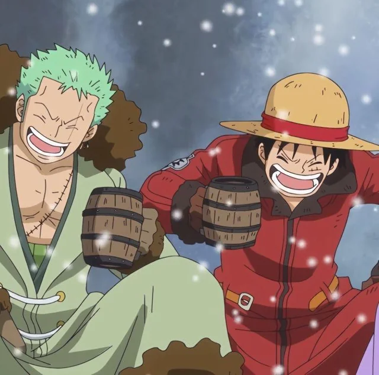
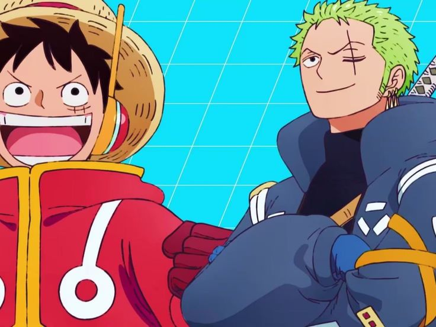

Somos una amistad que se formó por coincidencia cuando atravesabas por un mal momento, tome el cariño que tengo para poder compartir con cualquiera que lo necesite, me negué a dejarte solo por lo mal que estabas, no esperaba que mi ayuda la volverías gratitud y tiempo más tarde una amistad. Ahora tengo muchos recuerdos de noches desvelados viendo algún anime o película, platicando cosas sin sentido durante horas, jugando ranks hasta terminar tilteados, en días de incertidumbre cuando el futuro parecía abrumador tener a un hermano como tu hizo sentir todo más ligero. Algunas veces me hiciste llorar, era normal con nuestras personalidades tan diferentes pero fuiste quizá la primera persona en estar dispuesta a cambiar un poco para no herirme por eso tu amistad siempre será un tesoro encontrado por casualidad. Siempre peleamos por quien es Luffy y aunque mis ansias de libertad y que para algunos soy como el sol no es suficiente prueba para ti, tu cumpleaños está aquí por ello solo puedo dejarte el papel principal y tal como tú crees que soy, seré, ese verde intenso de Zoro, ese que a tus ojos representa la total lealtad. Es gracioso somos como dos hermanos peleando por quien apagara la vela del pastel, eso está bien porque aunque tú y yo nacimos lejos eres quizá el único vinculo que se sostuvo fuerte, esta amistad es aislante fuerte en el que la lluvia no daño nunca el techo de la casa del árbol en la que nos escondemos cuando algo va mal y esperamos a que el otro venga con comida a visitar. Deseo nunca estes lo suficientemente triste como para esperar allí y que vengas siempre con el felicidad. Feliz cumpleaños aunque esta no es una carta de felicitación, es importante que sepas que tan importante eres para mi.